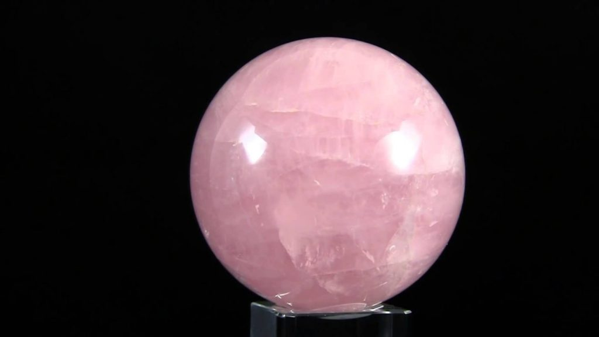
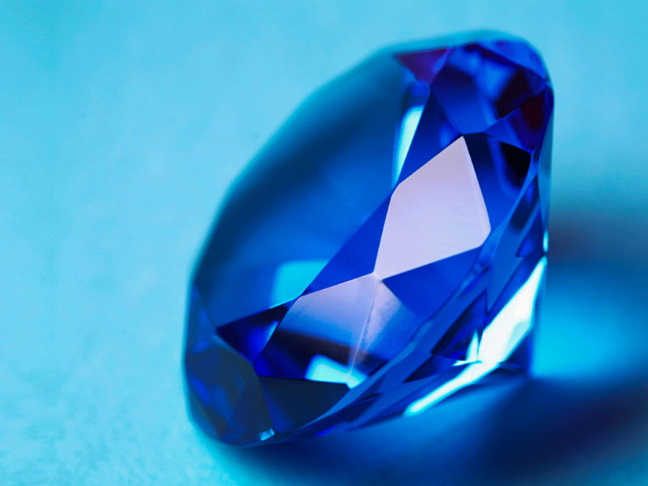
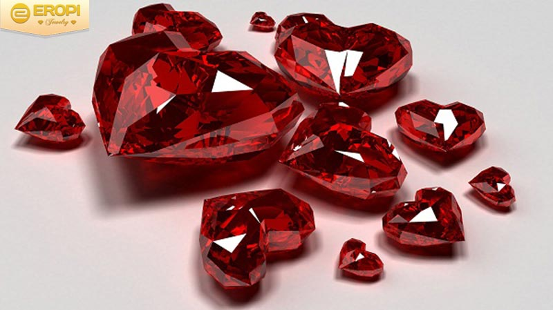
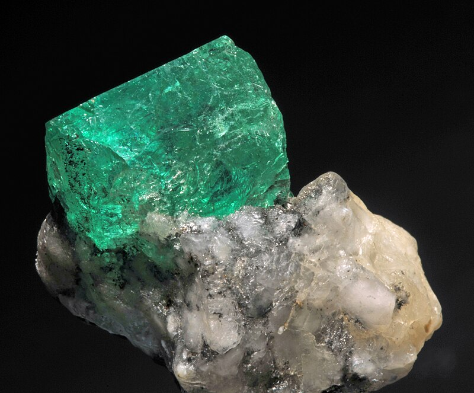
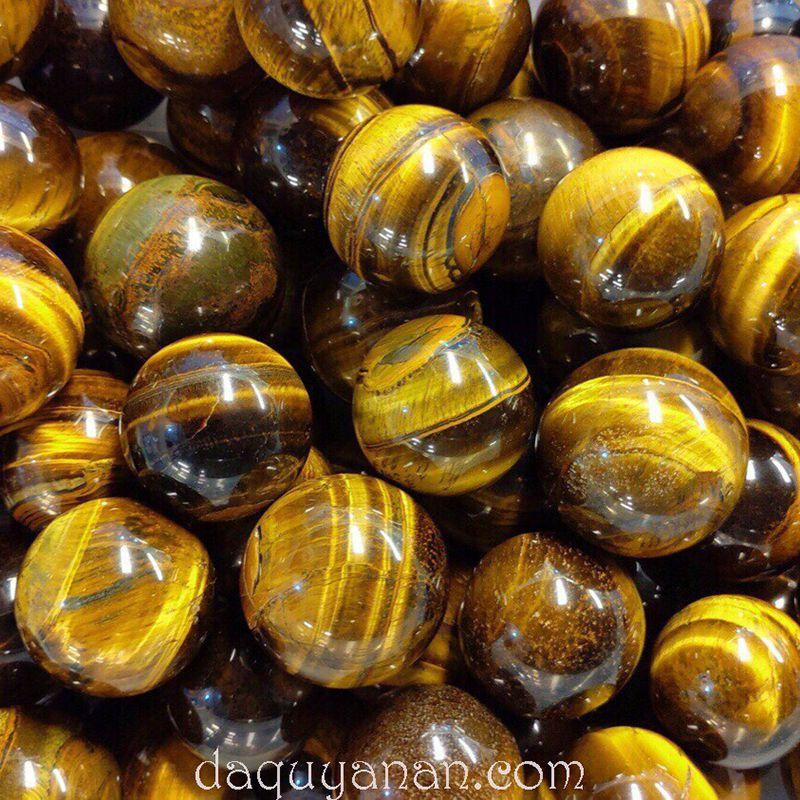
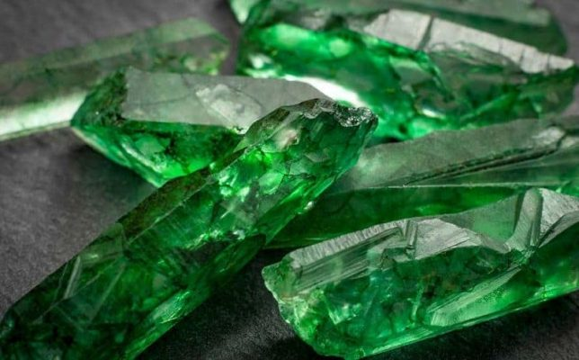

Crystal Shop
1. What is feng shui stone?
1.1 Define
Feng shui stone is the type that is formed and created from the ground after thousands of years of collecting and recovering the energies of heaven and earth. As a result, the stones possess powerful energies, positively affecting the owner. Thanks to those positive effects and meanings, this stone is chosen by many people both as a jewelry item and bring benefits to the body.
1.2 What are the uses and meanings of feng shui stones?
It is no coincidence that many people love and choose feng shui stones so much. Simply thanks to the energy it possesses, people have found great effects for health, fortune, and fame. So what is the meaning and effect of this stone? We will find out below.
1.2.1 What is the use of feng shui stone?
Talking about the use of feng shui stones is talking about the positive effects on the health of the owner of this item. You can see the amazing uses of this stone with:
• Owners of feng shui stones will see great benefits in terms of health and spirit, thanks to the impact of positive energy on the nervous system and brain. From there, dispel fatigue, stress, stress in life, work or study.
• For those who often suffer from diseases related to the nervous system such as headaches, dizziness, etc., regularly carrying feng shui stone items will help minimize these diseases. Thanks to the direct impact on the nervous system of those positive energies, the spirit is always refreshed, minimizing the incidence of diseases.
• People who often lose sleep will also get better, deeper sleep if they regularly put it under the pillow or near the head of the bed.
• People suffering from diseases of the digestive system also reduce stomach problems, bloating, indigestion or loss of appetite due to the impact of positive energy on the whole body, when the spirit is comfortable, Appetite will also increase.
• Thanks to the positive impact of feng shui stones, the function of the cardiovascular system is also improved, thereby reducing the risk of stroke, stroke ...
• The bone and joint system is also strengthened, especially for the elderly and children.
• People who work with computers a lot or work in hazardous environments, with a lot of ultraviolet rays or nuclear energy, if carried with them or placed at their desks, will help reduce harm.
1.2.2 The meaning of feng shui stone?
With feng shui stone, the meaning is mentioned as a spiritual element such as:
• Thanks to the positive energy, this stone can attract good energies and drive away the forces of darkness, evil spirits, and bad things to bring peace to the owner.
• People use this stone as a lucky item, an amulet to protect themselves if going to work far away or with people traveling by ship, raft, or out at sea.
• Many people believe that there are many types of feng shui stones that can bring convenience and luck to emotional relationships between men and women, co-worker relationships, between bosses and employees, family relationships, etc. friends... Because it affects the spirit, creating comfort, openness, making the owner's temperament more sociable, it is easier to receive the love of others.
• For people who make art, it can give them better creativity, sublimate emotions, create great works.
• With feng shui stone, those who do business and trade will also have a lot of luck, fortune, luck, and sale.
• In addition, feng shui gems are also used to open the 3rd chakra or those who regularly practice meditation and yoga use to quickly achieve the desired realm.
2. TOP 6 most common feng shui stones today
People have found a lot of natural stones that are classified as feng shui stones. We can mention some of the most popular and popular stones such as quartz, tiger's eye, marble, ruby, hematite, onyx, jade, hazel... Of course, there are popular and favorite stones such as:
2.1 Feng Shui Quartz Stone
Quartz stone is at the top of the list of the most popular and common stones today. This type is also known as Quartz. This type was formed over billions of years, it absorbed the most quintessential quintessence of heaven and earth. Therefore, the energy source that this stone possesses is extremely powerful. Thanks to that, this type is always chosen by scientific feng shuiists to serve different purposes. At the same time, it also becomes a feng shui jewelry item chosen by many people.
In particular, one finds many different shades of quartz. It comes in a variety of colors and beauty is unmatched, so most anyone who loves feng shui stones can find a suitable item. With feng shui quartz stone, you can choose from blue, purple, pink, red, yellow, brown, white... There are also hair quartz stones such as blonde quartz, red hair, brown hair, blue hair. Beautiful white hair.
2.2 Feng Shui Sapphire Stone
The next stone ranked in the TOP 6 is Sapphire. This type is famous for its luxurious beauty, nobility and is chosen by people with money more than quartz because the price is not cheap. This stone has a delicate beauty, a strong energy source, so it brings the user a lot of luck, fortune in life, fame, career and love.
2.3 Feng Shui ruby stone
The next stone one can choose to become a feng shui item is ruby. This type is also known by the familiar name red jade stone or ruby stone. Because it is only red, it is believed that this type brings luck and fortune, so it is popular. However, because there is only 1 color, this type can not be used by everyone.
2.4 Emerald Stone
The next stone that is also popular is Emerald. This type is called Emerald and its characteristic color is green. This is the color of growth and development, so it is considered a symbol of life, love or rebirth. Therefore, it is considered an item of luck, longevity and eternity. Many people choose it because it brings luxury beauty, aesthetics and many positive meanings.
2.5 Tiger's Eye Stone
This stone has the English name Tiger's eye. This type is a branch of the quartz family. It has an iridescent beauty with bright, brilliant veins when you leave it under the sun or electric lights. It is also a type with a strong energy source, so it brings a lot of luck to the owner.
2.6 Jade Stone – Jade Phi Thuy
Ranked 6th in popularity are two types with the same name "Jade": jade and jade. These two types are known as "beauties" of feng shui stones thanks to their beautiful emerald green color. Because it is so rare, so many people want to own it. You will see it appear a lot in Chinese historical dramas in the kings and nobles.
